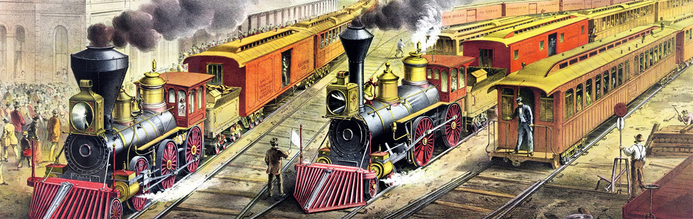

Transportul si Revolutia Industriala
Trenuri
Trenurile au jucat un rol crucial în evoluția transportului și în dezvoltarea societății moderne. Ele au adus numeroase beneficii și au influențat semnificativ modul în care oamenii călătoresc și transportă mărfuri. Iată câteva aspecte importante ale rolului trenurilor în transport:

Transportul rapid și eficient: Trenurile sunt cunoscute pentru viteza și eficiența lor în transportul persoanelor și mărfurilor. Ele pot atinge viteze mari pe distanțe lungi, permițând călătorii rapide între orașe și regiuni. Acest lucru a redus semnificativ timpul necesar pentru deplasare și a îmbunătățit conectivitatea între diferitele destinații.
Transportul de masă: Trenurile oferă posibilitatea transportului de masă, permițând un număr mare de persoane să călătorească simultan pe aceeași rută. Aceasta a fost o soluție importantă pentru problemele de trafic și congestionare urbană în orașele mari și dens populate.
Transportul mărfurilor: Trenurile sunt folosite și pentru transportul mărfurilor la scară largă. Ele pot transporta cantități mari de bunuri și materiale pe distanțe lungi, fiind esențiale pentru logistica industrială și comercială. De exemplu, trenurile sunt folosite pentru transportul de petrol, cărbune, cereale, produse manufacturate și alte mărfuri.
Conectivitatea între orașe și regiuni: Trenurile au contribuit la îmbunătățirea conectivității între orașe și regiuni, facilitând schimburile economice, culturale și sociale între diferitele comunități. Ele au deschis noi oportunități de afaceri, de locuire și de călătorie pentru oameni din diferite medii și regiuni.

-Primul tren cu pasageri avand o viteza de 24 km/h -
Impactul asupra dezvoltării economice: Trenurile au avut un impact semnificativ asupra dezvoltării economice și industriale a societăților. Ele au stimulat creșterea economică prin facilitarea comerțului și a transportului de mărfuri, prin crearea de locuri de muncă în industria feroviară și în sectoarele conexe și prin promovarea dezvoltării infrastructurii și a urbanizării.